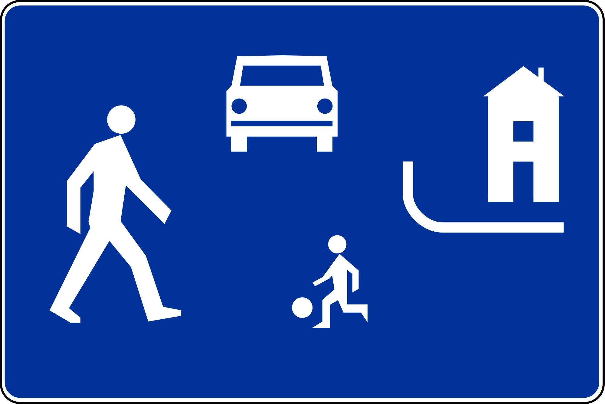
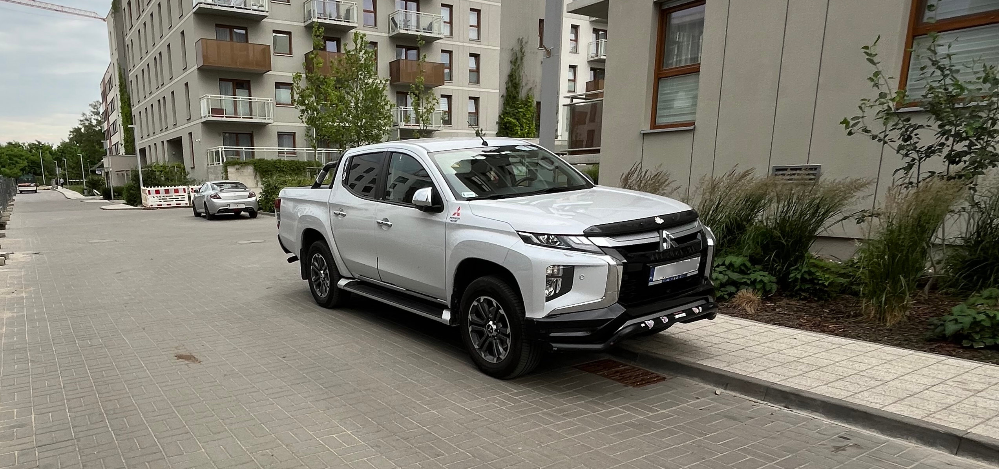

Kierowco! Na terenie osiedla obowiązuje strefa zamieszkania i szczegółowe zasady parkowania.

Tak parkujemy:
- Na wyznaczonych miejscach parkingowych.
- W garażach podziemnych.
- Na pobliskich parkingach publicznych.
Tak nie parkujemy:
- Poza wyznaczonymi miejscami.
- Na chodnikach, na trawnikach i zieleni.
- Na prywatnych miejscach postojowych. Miejsca prywatne rozpoznasz po wyrysowanym numerze albo blokadzie.
- Na miejscach dla osób niepełnosprawnych (jeśli nie posiadasz uprawnień).
- W miejscach blokujących przejazd i ograniczających widoczność.
Dlaczego to ważne?
- Dbamy o bezpieczeństwo mieszkańców, szczególnie dzieci bawiących się na osiedlu.
- Chronimy infrastrukturę i chodniki przed uszkodzeniami - ich naprawa to nasz koszt.
- Zapewnieniamy dostęp dla służb ratunkowych.
- Dbamy o estetykę i komfort życia na naszym osiedlu.
Gdzie zaparkować za darmo?
Konsekwencje nieprawidłowego parkowania:
- Parkowanie poza wyznaczonym miejscem
100zł, 1 punkt.
- Postój na chodniku pojazdu o DMC>2.5T
100zł, 1 punkt.
- Mniej niż 10 metrów od skrzyżowania
300zł, 5 punktów.
- Blokada koła/odholowanie pojazdu.
Przykład złego parkowania:

- Pojazd o DMC>2.5t zaparkowany na chodniku, mniej niż 10m od skrzyżowania.
- Konsekwencje dla kierowcy: 500zł, 7 punktów karnych.
- Konsekwencje dla mieszkanców: zza samochodu nie widać żadnego dziecka poniżej metra wzrostu.
- Konsekwencje dla wspólnoty: koniecznośc naprawy chodnika po kilku latach (DMC>2.5t!).
Zeskanuj kod aby udostępnić ten dokument komuś, zobaczyć miejsca parkingowe na mapie, albo zobaczyć jak zgłosić źle zaparkowany pojazd.
Jak zgłosić źle zaparkowany pojazd?
Jeśli ktoś uporczywie ignoruje zasady i parkuje poza wyznaczonymi miejscami, to można dokonać zgłoszenia na stronie Uprzejmie Donoszę. Strona pozwala na szybkie zrobienie zdjęc i wysłanie zgłoszenia, na podstawie którego SM wystawia mandat.
Jeśli jest to możliwe, przed zgłoszeniem spróbuj porozmawiać z kierowcą. Może to przynieść spodziewany efekt znacznie szybciej, niż przetworzenie zgłoszenia przez SM.